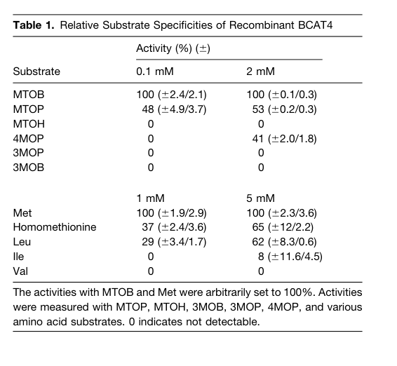
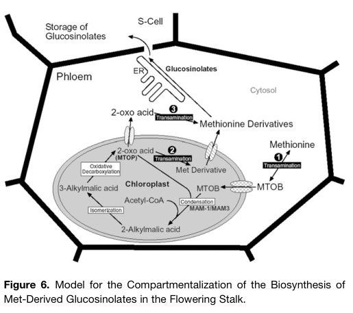

BCAT4 (BRANCHED-CHAIN AMINOTRANSFERASE 4, At3g19710) is a cytosolic, pyridoxal 5'-phosphate-dependent class-IV aminotransferase that, despite its membership in the branched-chain aminotransferase family, is specialized for methionine. It catalyzes the committed, initial step of methionine side-chain elongation in the biosynthesis of methionine-derived (aliphatic) glucosinolates: transamination of L-methionine to 4-methylthio-2-oxobutanoate (MTOB), which is then condensed with acetyl-CoA by methylthioalkylmalate synthases (MAM1/MAM3) in the plastid. Recombinant BCAT4 is most active with methionine, homomethionine and their 2-oxo acids, converts leucine only at lower affinity, and barely acts on isoleucine and valine; it cannot rescue the branched-chain amino acid auxotrophy of a yeast bat1/bat2 mutant. bcat4 knockouts have about half the wild-type level of aliphatic glucosinolates and accumulate free methionine and S-methylmethionine. BCAT4 is expressed mainly in phloem, is transiently induced by wounding and follows a light-dependent diurnal pattern co-ordinated with MAM1. Its function is partially backed up by the plastid BCAT3.
| GO Term | Evidence | Action | Reason |
|---|---|---|---|
|
GO:0003824
catalytic activity
|
IEA
GO_REF:0000002 |
ACCEPT |
Summary: Generic catalytic activity inferred from the class-IV aminotransferase InterPro signatures. Correct but uninformative; the specific activity is L-methionine:oxo-acid transaminase activity (GO:0010326), which is annotated with direct experimental evidence.
Reason: BCAT4 is an active PLP-dependent aminotransferase, so the root-level catalytic activity term is true. It is retained as a correct, very general electronic annotation; the informative core MF is GO:0010326.
Supporting Evidence:
PMID:17056707
Recombinant BCAT4 showed high efficiency with Met and its derivatives and the corresponding 2-oxo acids
|
|
GO:0004084
branched-chain-amino-acid:2-oxoglutarate transaminase activity
|
IBA
GO_REF:0000033 |
KEEP AS NON CORE |
Summary: Phylogenetic inference of the ancestral branched-chain aminotransferase activity of the plant BCAT clade (seeded by BCAT1, BCAT2, BCAT3, BCAT6). BCAT4 descends from that node and retains measurable in vitro activity with leucine (and weak activity with isoleucine), but its substrate preference has shifted to methionine and its derivatives, and it cannot support BCAA synthesis in yeast.
Reason: The IBD node placement is sound for the family and BCAT4 is inside the clade; the activity is not lost outright (Leu is converted at about 5-fold lower affinity than Met, and Funakoshi et al. reported activity with Leu, Ile and Val as donors with 2-oxoglutarate). However, the physiologically relevant activity is methionine transamination, and BCAT4 fails to complement a yeast BCAA-auxotroph, so BCAA:2-oxoglutarate transamination is a residual, non-core activity rather than the gene's function.
Supporting Evidence:
PMID:17056707
Substantial activities were also measured with homomethionine (37% at 1 mM and 65% at 5 mM) and with Leu (29% at 1 mM and 62% at 5 mM), while only little or no activity was detected with Ile (8% at 5 mM) and Val
PMID:17056707
Thus, the affinity of BCAT4 to Leu is about five times lower than to Met.
PMID:12068099
No complementation was achieved with AtBCAT-4 (data not shown).
|
|
GO:0004084
branched-chain-amino-acid:2-oxoglutarate transaminase activity
|
IEA
GO_REF:0000002 |
KEEP AS NON CORE |
Summary: InterPro2GO mapping from the branched-chain aminotransferase family signatures. As for the IBA row, the activity is residual for BCAT4, whose preferred substrates are methionine and its chain-elongated homologs.
Reason: Family-level signature mapping cannot distinguish the methionine-specialized BCAT4 from the canonical BCAA transaminases. The activity is measurable in vitro (Leu) but is not BCAT4's physiological role.
Supporting Evidence:
PMID:17056707
The standard substrates for BCATs are, with the exception of Leu and its 2-oxo acid, only poorly converted if at all.
|
|
GO:0005737
cytoplasm
|
IEA
GO_REF:0000044 |
ACCEPT |
Summary: Correct but general. BCAT4 is a soluble cytosolic enzyme (GFP fusion and fractionation); cytosol (GO:0005829) is the more precise location.
Reason: Consistent with the experimentally established cytosolic localization.
Supporting Evidence:
PMID:17056707
green fluorescent protein tagging experiments and subcellular protein fractions show that BCAT4 is located in the cytosol
|
|
GO:0005737
cytoplasm
|
ISM
GO_REF:0000122 |
ACCEPT |
Summary: AtSubP sequence-based prediction of cytoplasmic localization; agrees with the absence of organellar targeting signals and with experimental data.
Reason: Consistent with the lack of plastid/mitochondrial targeting and with GFP and fractionation data showing a cytosolic enzyme.
Supporting Evidence:
PMID:12068099
For AtBCAT-4 and -6, targeting to plastids or mitochondria is clearly excluded
|
|
GO:0005829
cytosol
|
IBA
GO_REF:0000033 |
ACCEPT |
Summary: Phylogenetic inference of cytosolic activity for the BCAT4/BCAT6 subclade; BCAT4's own experimental cytosol annotation is among the descendant evidence, which is expected and not circular.
Reason: Matches direct experimental localization of BCAT4 to the cytosol.
Supporting Evidence:
PMID:17056707
Taken together, the two independent experimental approaches consistently show that BCAT4 is a cytosolic enzyme and is thus located in a compartment different from the MAM enzymes.
|
|
GO:0005829
cytosol
|
IDA
PMID:17056707 Branched-chain aminotransferase4 is part of the chain elonga... |
ACCEPT |
Summary: GFP fusion in tobacco protoplasts gave exclusively cytosolic fluorescence, and an affinity-purified antibody detected BCAT4 only in the cytosolic fraction, not in chloroplast or mitochondrial fractions.
Reason: Two independent direct assays; the cytosolic location of the first step of methionine chain elongation is a notable feature of the pathway (the following MAM step is plastidial).
Supporting Evidence:
PMID:17056707
The green fluorescence is seen exclusively in the cytosol ( Figure 5A ).
PMID:17056707
considering the strong enrichment of the cytosol and chloroplast fractions and the exclusive detection of BCAT4 in the cytosol, these results clearly show that BCAT4 is a cytosolic protein.
|
|
GO:0009081
branched-chain amino acid metabolic process
|
IEA
GO_REF:0000002 |
MARK AS OVER ANNOTATED |
Summary: Family-level InterPro2GO mapping. BCAT4 has not been shown to function in leucine/isoleucine/valine metabolism in vivo: it fails to complement BCAA auxotrophy, and bcat4 knockouts change methionine/S-methylmethionine and aliphatic glucosinolate levels rather than BCAA pools.
Reason: The family mapping over-reaches for this neofunctionalized, methionine-specific member. The in vivo metabolic role of BCAT4 is methionine chain elongation for glucosinolate biosynthesis, not BCAA metabolism. Not removed outright because recombinant BCAT4 does convert leucine in vitro.
Supporting Evidence:
PMID:17056707
In a previous complementation analysis, BCAT4 failed to rescue the auxotrophy of a yeast double knockout mutant for BCAAs, suggesting a function other than typical BCAA metabolism
PMID:17056707
All other proteinogenic amino acids measured in this tissue did not show any clear changes, except Thr, which showed an increase of ∼25%.
|
|
GO:0009416
response to light stimulus
|
IEP
PMID:17056707 Branched-chain aminotransferase4 is part of the chain elonga... |
KEEP AS NON CORE |
Summary: BCAT4 transcript levels rise up to fivefold on illumination and stay high in the light, in phase with MAM1. This is an expression pattern, not a role of the enzyme in light perception or signalling.
Reason: IEP expression-pattern annotation; valid as a record of light-regulated expression but not part of BCAT4's core function.
Supporting Evidence:
PMID:17056707
While only low BCAT4 mRNA levels were observed during the night, an up to fivefold increase was found upon illumination ( Figure 4 , top panel).
|
|
GO:0009611
response to wounding
|
IEP
PMID:17056707 Branched-chain aminotransferase4 is part of the chain elonga... |
KEEP AS NON CORE |
Summary: BCAT4 promoter activity and mRNA are transiently induced by mechanical wounding (about 2-fold within 5 min), consistent with inducible glucosinolate defense.
Reason: IEP; documents wound-inducible transcription of a defense-metabolite biosynthetic gene, which is physiologically meaningful but not a core activity of the enzyme.
Supporting Evidence:
PMID:17056707
A 1.9-fold increase of BCAT4 steady state mRNA level can already be observed 5 min after wounding
|
|
GO:0010326
L-methionine:oxo-acid transaminase activity
|
EXP
PMID:18318836 Cloning and functional characterization of Arabidopsis thali... |
ACCEPT |
Summary: Funakoshi et al. (2008) cloned the Arabidopsis D-amino acid aminotransferase and, per UniProt, also characterized BCAT4 kinetically (Km 1.61 mM for L-leucine; no activity with D-isomers). Only the abstract is cached, which does not mention BCAT4, but the activity is independently well established for BCAT4.
Reason: The cached record is abstract-only and centres on a different enzyme, so the exact assay cannot be checked here; per project policy we defer to the curator because the annotated function is clearly correct for BCAT4 (Schuster et al. 2006 directly demonstrate methionine transamination).
Supporting Evidence:
PMID:18318836
consequently cloned and characterized A. thaliana D-amino acid aminotransferase, which is presumably involved in the metabolism of D-Asp in the plant by catalyzing transamination between D-amino acids
PMID:17056707
At both substrate concentrations, BCAT4 indeed displayed its highest relative activities with this amino acid.
|
|
GO:0010326
L-methionine:oxo-acid transaminase activity
|
IDA
PMID:17056707 Branched-chain aminotransferase4 is part of the chain elonga... |
ACCEPT |
Summary: Core molecular function. Recombinant BCAT4 transaminates L-methionine (Km 0.93 mM) and its 2-oxo acid MTOB (Km 0.045 mM) with Michaelis-Menten kinetics, and prefers methionine over all other amino acids tested.
Reason: Direct enzyme assay with purified recombinant protein, supported in vivo by methionine and S-methylmethionine accumulation in two independent knockout alleles.
Supporting Evidence:
PMID:17056707
For Met, K m and V max values were calculated to be 0.93 ± 0.08 mM and 0.089 ± 0.002 μmol/min·mg protein, respectively.
PMID:17056707
This sharp increase of free Met and its transport derivative SMM further support the conclusion that BCAT4 catalyzes the initial transamination of Met in glucosinolate formation generating MTOB.
|
|
GO:0010326
L-methionine:oxo-acid transaminase activity
|
IEA
GO_REF:0000120 |
ACCEPT |
Summary: Electronic mapping from the UniProt EC 2.6.1.88 / RHEA:31763 catalytic-activity annotation, which itself rests on the experimental data for BCAT4.
Reason: Correct, and matches the experimentally supported core activity.
Supporting Evidence:
PMID:17056707
strongly implicate BCAT4 in catalysis of the initial deamination of Met to 4-methylthio-2-oxobutyrate
|
|
GO:0019761
glucosinolate biosynthetic process
|
IMP
PMID:17056707 Branched-chain aminotransferase4 is part of the chain elonga... |
ACCEPT |
Summary: Two independent T-DNA knockouts (bcat4-1, bcat4-2; no detectable protein) reduce methionine-derived glucosinolates to about 50% of wild type in leaves and seeds, while indolic glucosinolates are not reduced. BCAT4 catalyzes the entry step of methionine chain elongation, so it directly participates in aliphatic glucosinolate biosynthesis.
Reason: Core biological process: BCAT4 performs a catalytic step (Met deamination) of the pathway, satisfying participation; loss-of-function phenotype confirms the in vivo role.
Supporting Evidence:
PMID:17056707
This was substantiated by in vivo analysis of two BCAT4 T-DNA knockout mutants, in which Met-derived aliphatic glucosinolate accumulation is reduced by approximately 50%.
PMID:17056707
By contrast, total indolic glucosinolates were slightly increased in the mutants.
|
|
GO:0033322
L-homomethionine biosynthetic process
|
IMP
PMID:17056707 Branched-chain aminotransferase4 is part of the chain elonga... |
NEW |
Summary: Proposed new, more specific process annotation. GO:0033322 is defined as formation of L-homomethionine, a non-protein amino acid synthesized from L-methionine via chain elongation, i.e. exactly the methionine chain-elongation cycle whose first (committed) step BCAT4 catalyzes.
Reason: Participation test: BCAT4 itself catalyzes a step of the process (transamination of Met to MTOB, the substrate of the MAM condensation); it is not merely required for or consumed by it. Comparator check: GO:0033322 currently has no annotations for any gene product in any species (QuickGO, 2026), including the other chain-elongation enzymes (MAM1, MAM3, IPMI, IPMDH1), so there is no curator convention excluding catalysts of the cycle; the term is simply unused. Not an ancestor/descendant of glucosinolate biosynthetic process (it is_a carboxylic acid biosynthetic process), so it adds specific coverage of the chain-elongation phase rather than redundancy.
Supporting Evidence:
PMID:17056707
BCAT4 catalyzes the initial transamination of Met to MTOB and acts directly at the interface between primary and secondary metabolism.
PMID:17056707
This pathway is initiated by the transamination of Met to MTOB, and further transaminations occur subsequently when chain-elongated 2-oxo acids are converted to Met derivatives
|
Q: Does BCAT4 also catalyze the transamination of chain-elongated 2-oxo acids back to homomethionine/dihomomethionine in the cytosol, or is that restricted to plastid BCAT3?
Q: How is MTOB produced in the cytosol by BCAT4 transported into the chloroplast for MAM condensation (candidate transporter BAT5/BASS5)?
Experiment: Determine kinetic parameters of recombinant BCAT4 with the full series of omega-methylthio-2-oxoalkanoates (C5-C9) and 2-oxoglutarate versus other amino acceptors to define which transamination steps of the elongation cycle it can serve.
Experiment: Use 13C/15N-labelled methionine feeding in bcat4, bcat3 and bcat3 bcat4 plants to quantify flux through the cytosolic versus plastidial entry into methionine chain elongation.
The research report should be a detailed narrative explaining the function, biological processes, and localization of the gene product. Citations should be given for all claims.
You should prioritize authoritative reviews and primary scientific literature when conducting research. You can supplement
this with annotations you find in gene/protein databases, but these can be outdated or inaccurate.
We are specifically interested in the primary function of the gene - for enzymes, what reaction is catalyzed, and what is the substrate specificity? For transporters, what is the substrate? For structural proteins or adapters, what is the broader structural role? For signaling molecules, what is the role in the pathway.
We are interested in where in or outside the cell the gene product carries out its function.
We are also interested in the signaling or biochemical pathways in which the gene functions. We are less interested in broad pleiotropic effects, except where these elucidate the precise role.
Include evidence where possible. We are interested in both experimental evidence as well as inference from structure, evolution, or bioinformatic analysis. Precise studies should be prioritized over high-throughput, where available.
BCAT4 (UniProt accession Q9LE06, gene locus At3g19710) encodes a branched-chain aminotransferase in Arabidopsis thaliana that has undergone functional specialization from its ancestral role in branched-chain amino acid metabolism to a dedicated function in specialized metabolism (koper2022evolutionaryoriginand pages 17-18, binder2010branchedchainaminoacid pages 9-10, schuster2006branchedchainaminotransferase4is pages 1-2). The protein belongs to the class-IV pyridoxal-phosphate-dependent aminotransferase family and contains characteristic Aminotrans_IV and BCAT-like domains (UniProt provided). BCAT4 is classified under EC number 2.6.1.88, formally designated as methionine aminotransferase, reflecting its specialized substrate preference (koper2022evolutionaryoriginand pages 17-18, schuster2006branchedchainaminotransferase4is pages 2-3).
BCAT4 catalyzes a reversible pyridoxal-phosphate (PLP)-dependent transamination reaction, with its primary physiological function being the conversion of L-methionine to 4-methylthio-2-oxobutyrate (MTOB) (schuster2006branchedchainaminotransferase4is pages 2-3, schuster2006branchedchainaminotransferase4is pages 1-2). The reaction proceeds as follows:
L-Methionine + α-ketoglutarate ⇄ 4-methylthio-2-oxobutyrate (MTOB) + L-glutamate
This represents the committed entry step for methionine into the chain-elongation pathway that ultimately produces methionine-derived aliphatic glucosinolates (schuster2006branchedchainaminotransferase4is pages 8-9, schuster2006branchedchainaminotransferase4is pages 1-2, knill2008arabidopsisbranchedchainaminotransferase pages 1-2).
Biochemical characterization of recombinant BCAT4 has revealed its strong preference for methionine-related substrates over canonical branched-chain amino acids (schuster2006branchedchainaminotransferase4is pages 2-3, schuster2006branchedchainaminotransferase4is pages 6-8). Key kinetic parameters include:
For 2-oxo acid substrates:
- MTOB (methionine-derived): Km = 0.045 ± 0.006 mM; Vmax = 2.7 ± 0.09 μmol·min⁻¹·mg protein⁻¹
- MTOP (one-carbon elongated): 48-53% relative activity compared to MTOB
- 4MOP (leucine-derived): No activity at 0.1 mM; 41% activity at 2.0 mM
For amino acid substrates:
- L-Methionine: Km = 0.93 ± 0.08 mM; Vmax = 0.089 ± 0.002 μmol·min⁻¹·mg protein⁻¹
- Homomethionine: 37-65% relative activity compared to methionine
- L-Leucine: Km = 4.86 ± 0.41 mM; Vmax = 0.11 ± 0.004 μmol·min⁻¹·mg protein⁻¹ (5.2-fold higher Km than methionine)
- L-Isoleucine: 0-8% activity
- L-Valine: No detectable activity
(schuster2006branchedchainaminotransferase4is pages 2-3, schuster2006branchedchainaminotransferase4is media 7cab97c5)
The exceptionally low Km value for MTOB (0.045 mM) compared to methionine (0.93 mM) suggests that BCAT4 has particularly high affinity for the 2-oxo acid substrate, consistent with its potential role in both the forward (methionine deamination) and reverse (transamination of chain-elongated 2-oxo acids) reactions of the pathway (schuster2006branchedchainaminotransferase4is pages 2-3, schuster2006branchedchainaminotransferase4is pages 11-12). The ability to accept MTOP and homomethionine indicates that BCAT4 can participate in transamination reactions at multiple points in the chain-elongation cycle, though other aminotransferases (particularly plastidic BCAT3) contribute to terminal transamination steps for longer-chain intermediates (knill2008arabidopsisbranchedchainaminotransferase pages 1-2).
| Substrate class | Substrate | Biological relationship | Assay concentration(s) | Relative BCAT4 activity | K_m (mM) | V_max (μmol·min⁻¹·mg protein⁻¹) | Interpretation |
|---|---|---|---|---|---|---|---|
| 2-oxo acid | 4-Methylthio-2-oxobutyrate (MTOB) | Methionine-derived; initial keto-acid intermediate in glucosinolate side-chain elongation | 0.1 and 2.0 mM | 100% (reference) | 0.045 ± 0.006 | 2.7 ± 0.09 | Highest-affinity measured substrate; strongly supports specialization for methionine metabolism. (schuster2006branchedchainaminotransferase4is pages 2-3, schuster2006branchedchainaminotransferase4is media 7cab97c5) |
| 2-oxo acid | 5-Methylthio-2-oxopentanoate (MTOP) | One-carbon-elongated methionine keto acid; precursor of homomethionine | 0.1 / 2.0 mM | 48% / 53% | Not reported | Not reported | Efficient acceptance indicates that BCAT4 can transaminate at least one chain-elongated intermediate. (schuster2006branchedchainaminotransferase4is pages 2-3) |
| 2-oxo acid | 6-Methylthio-2-oxohexanoate (MTOH) | Longer methionine-chain-elongation intermediate | 0.1 / 2.0 mM | Not detected | Not reported | Not reported | Longer-chain intermediates are not universally accepted; other aminotransferases contribute to terminal transamination. (schuster2006branchedchainaminotransferase4is pages 2-3, knill2008arabidopsisbranchedchainaminotransferase pages 1-2) |
| 2-oxo acid | 4-Methyl-2-oxopentanoate (4MOP; α-ketoisocaproate) | Leucine-corresponding keto acid; canonical BCAT substrate | 0.1 / 2.0 mM | 0% / 41% | Not reported | Not reported | Detectable only at high concentration, consistent with residual ancestral activity. (schuster2006branchedchainaminotransferase4is pages 2-3, binder2010branchedchainaminoacid pages 9-10) |
| 2-oxo acid | 3-Methyl-2-oxopentanoate (3MOP) | Isoleucine-corresponding keto acid | 0.1 / 2.0 mM | Not detected | Not reported | Not reported | No measurable activity under the tested conditions. (schuster2006branchedchainaminotransferase4is pages 2-3) |
| 2-oxo acid | 3-Methyl-2-oxobutanoate (3MOB) | Valine-corresponding keto acid | 0.1 / 2.0 mM | Not detected | Not reported | Not reported | No measurable activity under the tested conditions. (schuster2006branchedchainaminotransferase4is pages 2-3) |
| Amino acid | L-Methionine | Entry substrate for methionine-derived aliphatic glucosinolate biosynthesis | 1 and 5 mM | 100% (reference) | 0.93 ± 0.08 | 0.089 ± 0.002 | Preferred amino-acid substrate; supports Met + 2-oxoglutarate ⇌ MTOB + glutamate. (koper2022evolutionaryoriginand pages 17-18, schuster2006branchedchainaminotransferase4is pages 2-3, schuster2006branchedchainaminotransferase4is media 7cab97c5) |
| Amino acid | Homomethionine | One-carbon-elongated methionine derivative and glucosinolate precursor | 1 / 5 mM | 37% / 65% | Not reported | Not reported | Substantial activity supports reversible transamination of chain-elongated intermediates. (schuster2006branchedchainaminotransferase4is pages 2-3) |
| Amino acid | L-Leucine | Canonical branched-chain amino-acid substrate | 1 / 5 mM | 29% / 62% | 4.86 ± 0.41 | 0.11 ± 0.004 | Accepted at elevated concentration, but its K_m is approximately 5.2-fold higher than that for methionine, indicating lower apparent affinity. (schuster2006branchedchainaminotransferase4is pages 2-3, schuster2006branchedchainaminotransferase4is media 7cab97c5) |
| Amino acid | L-Isoleucine | Canonical branched-chain amino acid | 1 / 5 mM | 0% / 8% | Not reported | Not reported | Only weak activity at high concentration. (schuster2006branchedchainaminotransferase4is pages 2-3) |
| Amino acid | L-Valine | Canonical branched-chain amino acid | 1 / 5 mM | Not detected | Not reported | Not reported | No measurable activity, arguing against a major role in canonical valine metabolism. (schuster2006branchedchainaminotransferase4is pages 2-3) |
| Overall specificity | Methionine-pathway substrates versus canonical BCAAs | Functional specialization | — | MTOB, Met, MTOP, and homomethionine favored over Ile/Val substrates | — | — | The combined data identify BCAT4 as a specialized methionine aminotransferase for glucosinolate precursor formation, despite retained leucine-related activity. (koper2022evolutionaryoriginand pages 17-18, schuster2006branchedchainaminotransferase4is pages 2-3, schuster2006branchedchainaminotransferase4is pages 6-8, binder2010branchedchainaminoacid pages 9-10) |
Table: Substrate-specificity and kinetic data show that Arabidopsis BCAT4 preferentially processes methionine and methionine-chain-elongation intermediates rather than canonical branched-chain amino-acid substrates.
BCAT4 is exclusively localized to the cytosol, as definitively demonstrated through multiple complementary experimental approaches (chen2023researchprogresson pages 4-5, mattice2023investigatingthemitochondrial pages 63-67, schuster2006branchedchainaminotransferase4is pages 6-8). Subcellular fractionation studies and GFP-tagging experiments confirmed that BCAT4 is not detected in chloroplasts, mitochondria, nuclei, or peroxisomes (schuster2006branchedchainaminotransferase4is pages 6-8). This cytosolic localization is consistent with its predicted amino acid sequence, which lacks plastid or mitochondrial targeting sequences (chen2023researchprogresson pages 4-5).
BCAT4 shows highly restricted tissue-specific expression, being predominantly expressed in phloem cells of vascular tissues (schuster2006branchedchainaminotransferase4is pages 8-9, schuster2006branchedchainaminotransferase4is pages 6-8, schuster2006branchedchainaminotransferase4is pages 1-2, schuster2006branchedchainaminotransferase4is pages 5-6). Promoter-GUS reporter studies revealed strong BCAT4 expression in:
- Phloem cells of flowering stalks
- Vascular tissues of leaves, particularly in veins and petioles
- Root stele, specifically in phloem cells
- Tissues adjacent to S-cells (proposed glucosinolate storage sites)
(schuster2006branchedchainaminotransferase4is pages 8-9, schuster2006branchedchainaminotransferase4is pages 5-6, schuster2006branchedchainaminotransferase4is pages 4-5)
This phloem-predominant expression pattern is shared with other enzymes of the methionine-derived glucosinolate pathway, including MAM1, CYP79F1, and CYP79F2, suggesting coordinated spatial regulation of pathway components (schuster2006branchedchainaminotransferase4is pages 11-12, schuster2006branchedchainaminotransferase4is pages 8-9).
BCAT4 functions at the critical entry point of the methionine chain-elongation pathway, which constitutes the first phase of aliphatic glucosinolate biosynthesis (schuster2006branchedchainaminotransferase4is pages 11-12, schuster2006branchedchainaminotransferase4is pages 8-9, schuster2006branchedchainaminotransferase4is pages 2-3, binder2010branchedchainaminoacid pages 8-9). The complete pathway involves extensive compartmentalization between the cytosol and chloroplast:
Step 1 - Initial Transamination (Cytosol):
BCAT4 converts methionine to MTOB in the cytosol (schuster2006branchedchainaminotransferase4is pages 8-9, schuster2006branchedchainaminotransferase4is pages 1-2, schuster2006branchedchainaminotransferase4is pages 6-8).
Step 2 - Chloroplast Import and Chain Elongation:
MTOB is transported into the chloroplast, likely via the BAT5 transporter (gigolashvili2009theplastidicbile pages 1-2). Within the chloroplast, a cyclic chain-elongation process occurs:
- MAM1/MAM3 (methylthioalkylmalate synthases) catalyze condensation of MTOB with acetyl-CoA
- IPMI (isopropylmalate isomerase) catalyzes isomerization
- IPMDH1 (isopropylmalate dehydrogenase) catalyzes oxidative decarboxylation
- This produces chain-elongated 2-oxo acids (e.g., MTOP for one-carbon elongation)
(schuster2006branchedchainaminotransferase4is pages 11-12, schuster2006branchedchainaminotransferase4is pages 2-3, gigolashvili2009theplastidicbile pages 1-2)
Step 3 - Transamination to Amino Acids:
Chain-elongated 2-oxo acids undergo transamination to produce elongated methionine derivatives (homomethionine, dihomomethionine, etc.). This can occur via plastidic BCAT3 or by export to the cytosol followed by BCAT4-catalyzed transamination (schuster2006branchedchainaminotransferase4is pages 11-12, knill2008arabidopsisbranchedchainaminotransferase pages 1-2).
Step 4 - Core Glucosinolate Formation:
Elongated methionine derivatives are converted by CYP79F1/F2 (cytochrome P450s) to aldoximes, then processed through CYP83A1, C-S lyases, UDP-glucosyltransferases, and sulfotransferases to form mature glucosinolates (gigolashvili2009theplastidicbile pages 1-2).
(schuster2006branchedchainaminotransferase4is media 57065c3e, schuster2006branchedchainaminotransferase4is media b27b9c80)
BCAT4 represents an example of enzyme recruitment and functional divergence from primary to specialized metabolism (binder2010branchedchainaminoacid pages 9-10, schuster2006branchedchainaminotransferase4is pages 2-3, schuster2006branchedchainaminotransferase4is pages 1-2, schuster2006branchedchainaminotransferase4is pages 8-9). The methionine chain-elongation pathway shows remarkable parallel architecture to leucine biosynthesis:
(schuster2006branchedchainaminotransferase4is pages 2-3, schuster2006branchedchainaminotransferase4is media b27b9c80)
BCAT4 retains detectable activity toward leucine and its corresponding 2-oxo acid (29-62% relative activity), representing residual ancestral function (schuster2006branchedchainaminotransferase4is pages 2-3, binder2010branchedchainaminoacid pages 9-10, schuster2006branchedchainaminotransferase4is pages 8-9). However, it has undergone functional specialization away from canonical BCAA metabolism, as evidenced by: (1) failure to complement yeast BCAA auxotrophs, (2) minimal activity with isoleucine and no activity with valine, and (3) substantially higher affinity for methionine-derived substrates (koper2022evolutionaryoriginand pages 17-18, schuster2006branchedchainaminotransferase4is pages 2-3).
Analysis of T-DNA insertion mutants has provided strong genetic support for BCAT4's essential role in glucosinolate biosynthesis (schuster2006branchedchainaminotransferase4is pages 8-9, schuster2006branchedchainaminotransferase4is pages 4-5, schuster2006branchedchainaminotransferase4is pages 1-2). Two independent knockout lines (bcat4-1 with insertion in the last exon, and bcat4-2 with insertion in the second intron) were both confirmed as complete expression knockouts with no detectable BCAT4 protein (schuster2006branchedchainaminotransferase4is pages 8-9, schuster2006branchedchainaminotransferase4is pages 2-3).
Glucosinolate Reduction:
- Rosette leaves: Total methionine-derived glucosinolates reduced by approximately 47-50%
- Seeds: Total methionine-derived glucosinolates reduced by approximately 44-49%
- Multiple individual aliphatic glucosinolates (3MSOP, 4MSOB, 7MSOH, 8MSOO) were significantly reduced
(schuster2006branchedchainaminotransferase4is pages 8-9, schuster2006branchedchainaminotransferase4is pages 4-5, schuster2006branchedchainaminotransferase4is pages 1-2)
Methionine Accumulation:
- Seeds: Free methionine increased 3.5-fold in bcat4-1 (0.08 to 0.28 nmol·mg⁻¹) and 4.8-fold in bcat4-2 (0.09 to 0.43 nmol·mg⁻¹)
- S-methylmethionine (SMM), the phloem transport form of methionine, accumulated dramatically in mutant seeds (from undetectable in wild-type to highly abundant levels)
(schuster2006branchedchainaminotransferase4is pages 4-5, schuster2006branchedchainaminotransferase4is pages 9-11)
These metabolic changes strongly support BCAT4's proposed role in catalyzing the initial deamination of methionine: loss of BCAT4 activity creates a metabolic bottleneck, causing upstream accumulation of methionine and SMM while reducing downstream glucosinolate production (schuster2006branchedchainaminotransferase4is pages 8-9, schuster2006branchedchainaminotransferase4is pages 1-2). The incomplete (~50%) reduction in glucosinolates indicates that other aminotransferases, particularly plastidic BCAT3, can partially compensate for BCAT4 loss (knill2008arabidopsisbranchedchainaminotransferase pages 5-6, knill2008arabidopsisbranchedchainaminotransferase pages 1-2).
| Tissue | Phenotype / analyte | WT control for bcat4-1 | bcat4-1 | WT control for bcat4-2 | bcat4-2 | Interpretation |
|---|---|---|---|---|---|---|
| Rosette leaves | Total glucosinolates (µmol·g⁻¹ dry weight) | 27.23 | 17.62 | 24.87 | 16.66 | Decreased by approximately 35% and 33%, respectively. (schuster2006branchedchainaminotransferase4is pages 4-5) |
| Rosette leaves | Total methionine-derived glucosinolates (µmol·g⁻¹ dry weight) | 21.54 | 11.38 | 21.04 | 11.37 | Decreased by approximately 47% and 46%, establishing a major role for BCAT4 in pathway flux. (schuster2006branchedchainaminotransferase4is pages 8-9, schuster2006branchedchainaminotransferase4is pages 4-5) |
| Rosette leaves | Individual aliphatic glucosinolates | — | 3MSOP, 4MSOB, 7MSOH, and 8MSOO reduced | — | 3MSOP, 4MSOB, 7MSOH, and 8MSOO reduced | The effect extends across several methionine-derived glucosinolate chain lengths. (schuster2006branchedchainaminotransferase4is pages 4-5) |
| Rosette leaves | Free methionine | Lower baseline | Increased | Lower baseline | Increased | Impaired conversion of methionine to MTOB causes upstream substrate accumulation; exact leaf concentrations were unavailable. (schuster2006branchedchainaminotransferase4is pages 8-9, schuster2006branchedchainaminotransferase4is pages 1-2) |
| Rosette leaves | S-methylmethionine (SMM) | Lower baseline | Strongly increased | Lower baseline | Strongly increased | Accumulation of the phloem methionine-transport form supports reduced pathway entry; exact leaf concentrations were unavailable. (schuster2006branchedchainaminotransferase4is pages 8-9, schuster2006branchedchainaminotransferase4is pages 9-11) |
| Seeds | Total glucosinolates (µmol·g⁻¹ dry weight) | 85.35 | 44.85 | 116.55 | 69.17 | Decreased by approximately 47% and 41%, respectively. (schuster2006branchedchainaminotransferase4is pages 4-5) |
| Seeds | Total methionine-derived glucosinolates (µmol·g⁻¹ dry weight) | 83.23 | 42.22 | 111.78 | 63.12 | Decreased by approximately 49% and 44%, respectively. (schuster2006branchedchainaminotransferase4is pages 4-5) |
| Seeds | Free methionine (nmol·mg⁻¹ dry weight) | 0.08 | 0.28 | 0.09 | 0.43 | Increased approximately 3.5-fold in bcat4-1 and 4.8-fold in bcat4-2. (schuster2006branchedchainaminotransferase4is pages 4-5) |
| Seeds | S-methylmethionine (SMM) | Undetectable | Strongly accumulated | Undetectable | Strongly accumulated | SMM became highly abundant, indicating pronounced disruption of methionine allocation; line-specific concentrations were unavailable. (schuster2006branchedchainaminotransferase4is pages 9-11) |
| Seeds | Individual aliphatic glucosinolates | Multiple compounds at normal levels | Several reduced; 4MSOB and 5MSOP increased | Multiple compounds at normal levels | Several reduced; 4MSOB and 5MSOP increased | Most aliphatic products declined, but selected compounds accumulated, indicating altered composition and reduced total flux. (schuster2006branchedchainaminotransferase4is pages 4-5) |
| Overall | BCAT4 protein/expression | BCAT4 present | Not detected | BCAT4 present | Not detected | Both T-DNA lines were complete expression knockouts, strengthening the causal link between BCAT4 loss and the metabolic phenotype. (schuster2006branchedchainaminotransferase4is pages 8-9, schuster2006branchedchainaminotransferase4is pages 2-3) |
Table: Comparison of glucosinolate and methionine-related phenotypes in Arabidopsis bcat4-1 and bcat4-2 knockout lines. Both mutants show reduced methionine-derived glucosinolates and accumulation of free methionine and S-methylmethionine.
BCAT4 expression is regulated by multiple environmental and temporal signals, consistent with its role in defense-related secondary metabolism:
Wound Response:
Mechanical wounding (cutting, squeezing, or piercing plant tissues) induces rapid BCAT4 transcription. BCAT4 mRNA levels increase within 5 minutes of wounding, reach a maximum increase of approximately 2-2.6-fold, and return to baseline within 2 hours (schuster2006branchedchainaminotransferase4is pages 6-8, schuster2006branchedchainaminotransferase4is pages 5-6, schuster2006branchedchainaminotransferase4is pages 11-12). This wound-inducible expression is consistent with glucosinolates' role as defense compounds against herbivores (schuster2006branchedchainaminotransferase4is pages 8-9, schuster2006branchedchainaminotransferase4is pages 11-12).
Diurnal Regulation:
BCAT4 exhibits diurnal expression patterns coordinated with light/dark cycles. Transcript levels are low during darkness but increase up to fivefold upon illumination, remaining elevated during continued light exposure (schuster2006branchedchainaminotransferase4is pages 5-6). This diurnal regulation is shared with MAM1, indicating coordinated temporal control of pathway components (schuster2006branchedchainaminotransferase4is pages 8-9, schuster2006branchedchainaminotransferase4is pages 5-6).
Coordinated Pathway Expression:
BCAT4 expression shows strong correlation with MAM1 and other glucosinolate biosynthetic genes, supporting their functional relationship (schuster2006branchedchainaminotransferase4is pages 2-3, schuster2006branchedchainaminotransferase4is pages 8-9, schuster2006branchedchainaminotransferase4is pages 9-11, schuster2006branchedchainaminotransferase4is pages 6-8). Both BCAT4 and MAM1 respond similarly to wounding and light signals, and both are preferentially expressed in phloem tissues (schuster2006branchedchainaminotransferase4is pages 8-9).
BCAT4 operates at a critical metabolic branch point, channeling methionine from primary metabolism into specialized glucosinolate biosynthesis (schuster2006branchedchainaminotransferase4is pages 8-9, binder2010branchedchainaminoacid pages 8-9). The cytosolic localization of BCAT4, combined with evidence of coordinated expression with cytosolic methionine synthase genes rather than plastidic methionine biosynthesis genes, suggests that BCAT4 preferentially utilizes recycled cytosolic methionine rather than newly synthesized methionine from plastids (schuster2006branchedchainaminotransferase4is pages 9-11).
Recent studies have continued to elucidate BCAT4's broader context in plant metabolism and evolution:
Evolutionary and Functional Diversification:
A comprehensive 2022 review by Koper et al. placed BCAT4 within the broader evolutionary context of aminotransferase diversification, confirming that BCAT4 represents a clear example of functional specialization where an enzyme recruited from primary metabolism has been optimized for specialized metabolite production (koper2022evolutionaryoriginand pages 17-18, koper2022evolutionaryoriginand pages 16-17, koper2022evolutionaryoriginand pages 12-13). Unlike most Arabidopsis BCAT paralogs, BCAT4 does not show strong canonical BCAT activity and cannot rescue yeast BCAA auxotrophs, with its strongest activity directed toward the methionine-derived substrate 4MTOB (koper2022evolutionaryoriginand pages 17-18).
Glucosinolate Engineering Applications:
Multiple studies from 2021-2025 have utilized BCAT4 in metabolic engineering efforts to produce glucosinolates in heterologous hosts. Wang et al. (2021) demonstrated that Barbarea vulgaris BCAT4 performs more efficiently than Arabidopsis BCAT4 in engineering 2-phenylethylglucosinolate production, highlighting natural variation in BCAT substrate specificities (zhao2025sulforaphaneincancer pages 2-4, kitainda2021structuralstudiesof pages 9-11). These engineering studies confirm BCAT4's rate-limiting role at the pathway entry point (zhao2025sulforaphaneincancer pages 2-4).
Stress and Defense Signaling:
Recent work has linked BCAT4 to broader defense responses. A 2025 study on sulforaphane biosynthesis confirmed that BCAT4 knockout mutants exhibit 50-60% decreases in aliphatic glucosinolates and 5- to 12-fold accumulation of free methionine, emphasizing its critical role in directing methionine toward defense compound production (zhao2025sulforaphaneincancer pages 2-4). Zhao et al. (2025) noted that BCAT4 expression can be induced by environmental stresses including wounding, consistent with its participation in inducible chemical defense responses (zhao2025sulforaphaneincancer pages 2-4).
Pathway Regulation:
A 2025 study by Nguyen et al. examining WHIRLY1 regulation of glucosinolate biosynthesis found that genes in the early steps of aliphatic glucosinolate biosynthesis, including pathway genes regulated alongside BCAT4, are coordinately controlled during seedling development, though BCAT4 transcript levels themselves were not significantly altered in whirly1 mutants (kitainda2021structuralstudiesof pages 9-11). This suggests that while BCAT4 is part of a regulated pathway network, it may be under distinct regulatory control from some downstream genes.
BCAT4 (At3g19710) functions as a specialized cytosolic methionine aminotransferase that catalyzes the committed entry step for methionine-derived aliphatic glucosinolate biosynthesis in Arabidopsis thaliana. Through its primary catalytic activity—the reversible transamination of L-methionine to 4-methylthio-2-oxobutyrate (MTOB)—BCAT4 channels methionine from primary metabolism into the chain-elongation pathway that ultimately produces diverse aliphatic glucosinolates (schuster2006branchedchainaminotransferase4is pages 2-3, schuster2006branchedchainaminotransferase4is pages 8-9, schuster2006branchedchainaminotransferase4is pages 1-2).
The enzyme exhibits remarkable substrate specificity for methionine and methionine-chain-elongation intermediates (Km for MTOB = 0.045 mM; Km for Met = 0.93 mM), with minimal activity toward canonical branched-chain amino acids valine and isoleucine (schuster2006branchedchainaminotransferase4is pages 2-3, schuster2006branchedchainaminotransferase4is pages 6-8). This specialization represents an evolutionary adaptation from an ancestral BCAA metabolism enzyme, with BCAT4 retaining only residual leucine-related activity (binder2010branchedchainaminoacid pages 9-10, schuster2006branchedchainaminotransferase4is pages 2-3, schuster2006branchedchainaminotransferase4is pages 1-2).
BCAT4 operates exclusively in the cytosol and is predominantly expressed in phloem tissues, where it responds to wounding and follows diurnal expression patterns (schuster2006branchedchainaminotransferase4is pages 6-8, schuster2006branchedchainaminotransferase4is pages 1-2, schuster2006branchedchainaminotransferase4is pages 5-6). Its activity is coordinated with downstream enzymes including MAM1 (chloroplastic chain elongation), BCAT3 (plastidic transamination), and CYP79F1/F2 (aldoxime formation), establishing a compartmentalized metabolic pathway linking cytosolic, plastidic, and ER-localized enzymatic steps (schuster2006branchedchainaminotransferase4is pages 11-12, gigolashvili2009theplastidicbile pages 1-2, schuster2006branchedchainaminotransferase4is pages 8-9).
Genetic evidence from knockout mutants demonstrates BCAT4's essential contribution to glucosinolate production: bcat4 mutants show approximately 50% reduction in methionine-derived glucosinolates and dramatic accumulation of free methionine and S-methylmethionine (schuster2006branchedchainaminotransferase4is pages 8-9, schuster2006branchedchainaminotransferase4is pages 4-5, schuster2006branchedchainaminotransferase4is pages 1-2). This partial rather than complete loss of glucosinolates reflects functional redundancy with other aminotransferases, particularly BCAT3 (knill2008arabidopsisbranchedchainaminotransferase pages 5-6, knill2008arabidopsisbranchedchainaminotransferase pages 1-2).
Through its integration of primary methionine metabolism with specialized glucosinolate biosynthesis, wound-responsive regulation, and phloem-specific expression, BCAT4 represents a key metabolic gateway controlling the production of defense-related secondary metabolites in Arabidopsis thaliana (schuster2006branchedchainaminotransferase4is pages 8-9, binder2010branchedchainaminoacid pages 8-9).
References
(koper2022evolutionaryoriginand pages 17-18): Kaan Koper, Sang-Woo Han, Delia Casas Pastor, Yasuo Yoshikuni, and Hiroshi A. Maeda. Evolutionary origin and functional diversification of aminotransferases. Journal of Biological Chemistry, 298:102122, Aug 2022. URL: https://doi.org/10.1016/j.jbc.2022.102122, doi:10.1016/j.jbc.2022.102122. This article has 104 citations and is from a domain leading peer-reviewed journal.
(binder2010branchedchainaminoacid pages 9-10): Stefan Binder. Branched-chain amino acid metabolism in arabidopsis thaliana. The Arabidopsis Book, 2010:e0137, Jan 2010. URL: https://doi.org/10.1199/tab.0137, doi:10.1199/tab.0137. This article has 313 citations and is from a peer-reviewed journal.
(schuster2006branchedchainaminotransferase4is pages 1-2): Joachim Schuster, Tanja Knill, Michael Reichelt, Jonathan Gershenzon, and Stefan Binder. Branched-chain aminotransferase4 is part of the chain elongation pathway in the biosynthesis of methionine-derived glucosinolates in arabidopsis. The Plant Cell, 18(10):2664-2679, Oct 2006. URL: https://doi.org/10.1105/tpc.105.039339, doi:10.1105/tpc.105.039339. This article has 254 citations.
(schuster2006branchedchainaminotransferase4is pages 2-3): Joachim Schuster, Tanja Knill, Michael Reichelt, Jonathan Gershenzon, and Stefan Binder. Branched-chain aminotransferase4 is part of the chain elongation pathway in the biosynthesis of methionine-derived glucosinolates in arabidopsis. The Plant Cell, 18(10):2664-2679, Oct 2006. URL: https://doi.org/10.1105/tpc.105.039339, doi:10.1105/tpc.105.039339. This article has 254 citations.
(schuster2006branchedchainaminotransferase4is pages 8-9): Joachim Schuster, Tanja Knill, Michael Reichelt, Jonathan Gershenzon, and Stefan Binder. Branched-chain aminotransferase4 is part of the chain elongation pathway in the biosynthesis of methionine-derived glucosinolates in arabidopsis. The Plant Cell, 18(10):2664-2679, Oct 2006. URL: https://doi.org/10.1105/tpc.105.039339, doi:10.1105/tpc.105.039339. This article has 254 citations.
(knill2008arabidopsisbranchedchainaminotransferase pages 1-2): Tanja Knill, Joachim Schuster, Michael Reichelt, Jonathan Gershenzon, and Stefan Binder. Arabidopsis branched-chain aminotransferase 3 functions in both amino acid and glucosinolate biosynthesis. Plant Physiology, 146:1028-1039, Dec 2008. URL: https://doi.org/10.1104/pp.107.111609, doi:10.1104/pp.107.111609. This article has 166 citations and is from a highest quality peer-reviewed journal.
(schuster2006branchedchainaminotransferase4is pages 6-8): Joachim Schuster, Tanja Knill, Michael Reichelt, Jonathan Gershenzon, and Stefan Binder. Branched-chain aminotransferase4 is part of the chain elongation pathway in the biosynthesis of methionine-derived glucosinolates in arabidopsis. The Plant Cell, 18(10):2664-2679, Oct 2006. URL: https://doi.org/10.1105/tpc.105.039339, doi:10.1105/tpc.105.039339. This article has 254 citations.
(schuster2006branchedchainaminotransferase4is media 7cab97c5): Joachim Schuster, Tanja Knill, Michael Reichelt, Jonathan Gershenzon, and Stefan Binder. Branched-chain aminotransferase4 is part of the chain elongation pathway in the biosynthesis of methionine-derived glucosinolates in arabidopsis. The Plant Cell, 18(10):2664-2679, Oct 2006. URL: https://doi.org/10.1105/tpc.105.039339, doi:10.1105/tpc.105.039339. This article has 254 citations.
(schuster2006branchedchainaminotransferase4is pages 11-12): Joachim Schuster, Tanja Knill, Michael Reichelt, Jonathan Gershenzon, and Stefan Binder. Branched-chain aminotransferase4 is part of the chain elongation pathway in the biosynthesis of methionine-derived glucosinolates in arabidopsis. The Plant Cell, 18(10):2664-2679, Oct 2006. URL: https://doi.org/10.1105/tpc.105.039339, doi:10.1105/tpc.105.039339. This article has 254 citations.
(chen2023researchprogresson pages 4-5): Can Chen, Hassan Naveed, and Keping Chen. Research progress on branched-chain amino acid aminotransferases. Frontiers in Genetics, Nov 2023. URL: https://doi.org/10.3389/fgene.2023.1233669, doi:10.3389/fgene.2023.1233669. This article has 36 citations and is from a peer-reviewed journal.
(mattice2023investigatingthemitochondrial pages 63-67): Jordan F Mattice. Investigating the mitochondrial signaling role of shewanella-like protein phosphatase 2 in arabidopsis thaliana. Jan 2023. URL: https://doi.org/10.11575/prism/dspace/41240, doi:10.11575/prism/dspace/41240. This article has 0 citations.
(schuster2006branchedchainaminotransferase4is pages 5-6): Joachim Schuster, Tanja Knill, Michael Reichelt, Jonathan Gershenzon, and Stefan Binder. Branched-chain aminotransferase4 is part of the chain elongation pathway in the biosynthesis of methionine-derived glucosinolates in arabidopsis. The Plant Cell, 18(10):2664-2679, Oct 2006. URL: https://doi.org/10.1105/tpc.105.039339, doi:10.1105/tpc.105.039339. This article has 254 citations.
(schuster2006branchedchainaminotransferase4is pages 4-5): Joachim Schuster, Tanja Knill, Michael Reichelt, Jonathan Gershenzon, and Stefan Binder. Branched-chain aminotransferase4 is part of the chain elongation pathway in the biosynthesis of methionine-derived glucosinolates in arabidopsis. The Plant Cell, 18(10):2664-2679, Oct 2006. URL: https://doi.org/10.1105/tpc.105.039339, doi:10.1105/tpc.105.039339. This article has 254 citations.
(binder2010branchedchainaminoacid pages 8-9): Stefan Binder. Branched-chain amino acid metabolism in arabidopsis thaliana. The Arabidopsis Book, 2010:e0137, Jan 2010. URL: https://doi.org/10.1199/tab.0137, doi:10.1199/tab.0137. This article has 313 citations and is from a peer-reviewed journal.
(gigolashvili2009theplastidicbile pages 1-2): Tamara Gigolashvili, Ruslan Yatusevich, Inga Rollwitz, Melanie Humphry, Jonathan Gershenzon, and Ulf-Ingo Flügge. The plastidic bile acid transporter 5 is required for the biosynthesis of methionine-derived glucosinolates in arabidopsis thaliana. The Plant Cell, 21:1813-1829, Jun 2009. URL: https://doi.org/10.1105/tpc.109.066399, doi:10.1105/tpc.109.066399. This article has 168 citations.
(schuster2006branchedchainaminotransferase4is media 57065c3e): Joachim Schuster, Tanja Knill, Michael Reichelt, Jonathan Gershenzon, and Stefan Binder. Branched-chain aminotransferase4 is part of the chain elongation pathway in the biosynthesis of methionine-derived glucosinolates in arabidopsis. The Plant Cell, 18(10):2664-2679, Oct 2006. URL: https://doi.org/10.1105/tpc.105.039339, doi:10.1105/tpc.105.039339. This article has 254 citations.
(schuster2006branchedchainaminotransferase4is media b27b9c80): Joachim Schuster, Tanja Knill, Michael Reichelt, Jonathan Gershenzon, and Stefan Binder. Branched-chain aminotransferase4 is part of the chain elongation pathway in the biosynthesis of methionine-derived glucosinolates in arabidopsis. The Plant Cell, 18(10):2664-2679, Oct 2006. URL: https://doi.org/10.1105/tpc.105.039339, doi:10.1105/tpc.105.039339. This article has 254 citations.
(schuster2006branchedchainaminotransferase4is pages 9-11): Joachim Schuster, Tanja Knill, Michael Reichelt, Jonathan Gershenzon, and Stefan Binder. Branched-chain aminotransferase4 is part of the chain elongation pathway in the biosynthesis of methionine-derived glucosinolates in arabidopsis. The Plant Cell, 18(10):2664-2679, Oct 2006. URL: https://doi.org/10.1105/tpc.105.039339, doi:10.1105/tpc.105.039339. This article has 254 citations.
(knill2008arabidopsisbranchedchainaminotransferase pages 5-6): Tanja Knill, Joachim Schuster, Michael Reichelt, Jonathan Gershenzon, and Stefan Binder. Arabidopsis branched-chain aminotransferase 3 functions in both amino acid and glucosinolate biosynthesis. Plant Physiology, 146:1028-1039, Dec 2008. URL: https://doi.org/10.1104/pp.107.111609, doi:10.1104/pp.107.111609. This article has 166 citations and is from a highest quality peer-reviewed journal.
(koper2022evolutionaryoriginand pages 16-17): Kaan Koper, Sang-Woo Han, Delia Casas Pastor, Yasuo Yoshikuni, and Hiroshi A. Maeda. Evolutionary origin and functional diversification of aminotransferases. Journal of Biological Chemistry, 298:102122, Aug 2022. URL: https://doi.org/10.1016/j.jbc.2022.102122, doi:10.1016/j.jbc.2022.102122. This article has 104 citations and is from a domain leading peer-reviewed journal.
(koper2022evolutionaryoriginand pages 12-13): Kaan Koper, Sang-Woo Han, Delia Casas Pastor, Yasuo Yoshikuni, and Hiroshi A. Maeda. Evolutionary origin and functional diversification of aminotransferases. Journal of Biological Chemistry, 298:102122, Aug 2022. URL: https://doi.org/10.1016/j.jbc.2022.102122, doi:10.1016/j.jbc.2022.102122. This article has 104 citations and is from a domain leading peer-reviewed journal.
(zhao2025sulforaphaneincancer pages 2-4): Zhi-Peng Zhao, Qian-Qian Chen, Xinyu Qiao, Jian-Jiang Wang, Zaid Tala Abdulqader Ali, Jun Li, and L. Yin. Sulforaphane in cancer precision medicine: from biosynthetic origins to multiscale mechanisms and clinical translation. Frontiers in Immunology, Oct 2025. URL: https://doi.org/10.3389/fimmu.2025.1702860, doi:10.3389/fimmu.2025.1702860. This article has 17 citations and is from a peer-reviewed journal.
(kitainda2021structuralstudiesof pages 9-11): Vivian Kitainda and Joseph M. Jez. Structural studies of aliphatic glucosinolate chain-elongation enzymes. Antioxidants, 10:1500, Sep 2021. URL: https://doi.org/10.3390/antiox10091500, doi:10.3390/antiox10091500. This article has 34 citations.


id: Q9LE06
gene_symbol: BCAT4
product_type: PROTEIN
status: COMPLETE
taxon:
id: NCBITaxon:3702
label: Arabidopsis thaliana
description: >-
BCAT4 (BRANCHED-CHAIN AMINOTRANSFERASE 4, At3g19710) is a cytosolic, pyridoxal
5'-phosphate-dependent class-IV aminotransferase that, despite its membership in the
branched-chain aminotransferase family, is specialized for methionine. It catalyzes the
committed, initial step of methionine side-chain elongation in the biosynthesis of
methionine-derived (aliphatic) glucosinolates: transamination of L-methionine to
4-methylthio-2-oxobutanoate (MTOB), which is then condensed with acetyl-CoA by
methylthioalkylmalate synthases (MAM1/MAM3) in the plastid. Recombinant BCAT4 is most
active with methionine, homomethionine and their 2-oxo acids, converts leucine only at
lower affinity, and barely acts on isoleucine and valine; it cannot rescue the
branched-chain amino acid auxotrophy of a yeast bat1/bat2 mutant. bcat4 knockouts have
about half the wild-type level of aliphatic glucosinolates and accumulate free
methionine and S-methylmethionine. BCAT4 is expressed mainly in phloem, is transiently
induced by wounding and follows a light-dependent diurnal pattern co-ordinated with
MAM1. Its function is partially backed up by the plastid BCAT3.
existing_annotations:
- term:
id: GO:0003824
label: catalytic activity
evidence_type: IEA
original_reference_id: GO_REF:0000002
qualifier: enables
supporting_entities:
- InterPro:IPR001544
- InterPro:IPR036038
review:
summary: >-
Generic catalytic activity inferred from the class-IV aminotransferase InterPro
signatures. Correct but uninformative; the specific activity is L-methionine:oxo-acid
transaminase activity (GO:0010326), which is annotated with direct experimental
evidence.
action: ACCEPT
reason: >-
BCAT4 is an active PLP-dependent aminotransferase, so the root-level catalytic
activity term is true. It is retained as a correct, very general electronic
annotation; the informative core MF is GO:0010326.
supported_by:
- reference_id: PMID:17056707
supporting_text: >-
Recombinant BCAT4 showed high efficiency with Met and its derivatives and the
corresponding 2-oxo acids
- term:
id: GO:0004084
label: branched-chain-amino-acid:2-oxoglutarate transaminase activity
evidence_type: IBA
original_reference_id: GO_REF:0000033
qualifier: enables
supporting_entities:
- AGI_LocusCode:AT1G10060
- AGI_LocusCode:AT1G10070
- AGI_LocusCode:AT1G50110
- AGI_LocusCode:AT3G49680
- PANTHER:PTN002450258
review:
summary: >-
Phylogenetic inference of the ancestral branched-chain aminotransferase activity of
the plant BCAT clade (seeded by BCAT1, BCAT2, BCAT3, BCAT6). BCAT4 descends from that
node and retains measurable in vitro activity with leucine (and weak activity with
isoleucine), but its substrate preference has shifted to methionine and its
derivatives, and it cannot support BCAA synthesis in yeast.
action: KEEP_AS_NON_CORE
reason: >-
The IBD node placement is sound for the family and BCAT4 is inside the clade; the
activity is not lost outright (Leu is converted at about 5-fold lower affinity than
Met, and Funakoshi et al. reported activity with Leu, Ile and Val as donors with
2-oxoglutarate). However, the physiologically relevant activity is methionine
transamination, and BCAT4 fails to complement a yeast BCAA-auxotroph, so
BCAA:2-oxoglutarate transamination is a residual, non-core activity rather than the
gene's function.
supported_by:
- reference_id: PMID:17056707
supporting_text: >-
Substantial activities were also measured with homomethionine (37% at 1 mM and 65%
at 5 mM) and with Leu (29% at 1 mM and 62% at 5 mM), while only little or no
activity was detected with Ile (8% at 5 mM) and Val
- reference_id: PMID:17056707
supporting_text: >-
Thus, the affinity of BCAT4 to Leu is about five times lower than to Met.
- reference_id: PMID:12068099
supporting_text: No complementation was achieved with AtBCAT-4 (data not shown).
- term:
id: GO:0004084
label: branched-chain-amino-acid:2-oxoglutarate transaminase activity
evidence_type: IEA
original_reference_id: GO_REF:0000002
qualifier: enables
supporting_entities:
- InterPro:IPR005786
- InterPro:IPR033939
review:
summary: >-
InterPro2GO mapping from the branched-chain aminotransferase family signatures. As for
the IBA row, the activity is residual for BCAT4, whose preferred substrates are
methionine and its chain-elongated homologs.
action: KEEP_AS_NON_CORE
reason: >-
Family-level signature mapping cannot distinguish the methionine-specialized BCAT4
from the canonical BCAA transaminases. The activity is measurable in vitro (Leu) but
is not BCAT4's physiological role.
supported_by:
- reference_id: PMID:17056707
supporting_text: >-
The standard substrates for BCATs are, with the exception of Leu and its 2-oxo acid,
only poorly converted if at all.
- term:
id: GO:0005737
label: cytoplasm
evidence_type: IEA
original_reference_id: GO_REF:0000044
qualifier: located_in
supporting_entities:
- UniProtKB-SubCell:SL-0086
review:
summary: >-
Correct but general. BCAT4 is a soluble cytosolic enzyme (GFP fusion and
fractionation); cytosol (GO:0005829) is the more precise location.
action: ACCEPT
reason: Consistent with the experimentally established cytosolic localization.
supported_by:
- reference_id: PMID:17056707
supporting_text: >-
green fluorescent protein tagging experiments and subcellular protein fractions show
that BCAT4 is located in the cytosol
- term:
id: GO:0005737
label: cytoplasm
evidence_type: ISM
original_reference_id: GO_REF:0000122
qualifier: located_in
review:
summary: >-
AtSubP sequence-based prediction of cytoplasmic localization; agrees with the
absence of organellar targeting signals and with experimental data.
action: ACCEPT
reason: >-
Consistent with the lack of plastid/mitochondrial targeting and with GFP and
fractionation data showing a cytosolic enzyme.
supported_by:
- reference_id: PMID:12068099
supporting_text: >-
For AtBCAT-4 and -6, targeting to plastids or mitochondria is clearly excluded
- term:
id: GO:0005829
label: cytosol
evidence_type: IBA
original_reference_id: GO_REF:0000033
qualifier: is_active_in
supporting_entities:
- AGI_LocusCode:AT1G50110
- AGI_LocusCode:AT3G19710
- PANTHER:PTN005130943
review:
summary: >-
Phylogenetic inference of cytosolic activity for the BCAT4/BCAT6 subclade; BCAT4's
own experimental cytosol annotation is among the descendant evidence, which is
expected and not circular.
action: ACCEPT
reason: Matches direct experimental localization of BCAT4 to the cytosol.
supported_by:
- reference_id: PMID:17056707
supporting_text: >-
Taken together, the two independent experimental approaches consistently show that
BCAT4 is a cytosolic enzyme and is thus located in a compartment different from the
MAM enzymes.
- term:
id: GO:0005829
label: cytosol
evidence_type: IDA
original_reference_id: PMID:17056707
qualifier: located_in
review:
summary: >-
GFP fusion in tobacco protoplasts gave exclusively cytosolic fluorescence, and an
affinity-purified antibody detected BCAT4 only in the cytosolic fraction, not in
chloroplast or mitochondrial fractions.
action: ACCEPT
reason: >-
Two independent direct assays; the cytosolic location of the first step of
methionine chain elongation is a notable feature of the pathway (the following MAM
step is plastidial).
supported_by:
- reference_id: PMID:17056707
supporting_text: >-
The green fluorescence is seen exclusively in the cytosol ( Figure 5A ).
- reference_id: PMID:17056707
supporting_text: >-
considering the strong enrichment of the cytosol and chloroplast fractions and the
exclusive detection of BCAT4 in the cytosol, these results clearly show that BCAT4
is a cytosolic protein.
- term:
id: GO:0009081
label: branched-chain amino acid metabolic process
evidence_type: IEA
original_reference_id: GO_REF:0000002
qualifier: involved_in
supporting_entities:
- InterPro:IPR005786
- InterPro:IPR033939
review:
summary: >-
Family-level InterPro2GO mapping. BCAT4 has not been shown to function in
leucine/isoleucine/valine metabolism in vivo: it fails to complement BCAA auxotrophy,
and bcat4 knockouts change methionine/S-methylmethionine and aliphatic glucosinolate
levels rather than BCAA pools.
action: MARK_AS_OVER_ANNOTATED
reason: >-
The family mapping over-reaches for this neofunctionalized, methionine-specific
member. The in vivo metabolic role of BCAT4 is methionine chain elongation for
glucosinolate biosynthesis, not BCAA metabolism. Not removed outright because
recombinant BCAT4 does convert leucine in vitro.
supported_by:
- reference_id: PMID:17056707
supporting_text: >-
In a previous complementation analysis, BCAT4 failed to rescue the auxotrophy of a
yeast double knockout mutant for BCAAs, suggesting a function other than typical
BCAA metabolism
- reference_id: PMID:17056707
supporting_text: >-
All other proteinogenic amino acids measured in this tissue did not show any clear
changes, except Thr, which showed an increase of ∼25%.
- term:
id: GO:0009416
label: response to light stimulus
evidence_type: IEP
original_reference_id: PMID:17056707
qualifier: involved_in
review:
summary: >-
BCAT4 transcript levels rise up to fivefold on illumination and stay high in the
light, in phase with MAM1. This is an expression pattern, not a role of the enzyme in
light perception or signalling.
action: KEEP_AS_NON_CORE
reason: >-
IEP expression-pattern annotation; valid as a record of light-regulated expression
but not part of BCAT4's core function.
supported_by:
- reference_id: PMID:17056707
supporting_text: >-
While only low BCAT4 mRNA levels were observed during the night, an up to fivefold
increase was found upon illumination ( Figure 4 , top panel).
- term:
id: GO:0009611
label: response to wounding
evidence_type: IEP
original_reference_id: PMID:17056707
qualifier: involved_in
review:
summary: >-
BCAT4 promoter activity and mRNA are transiently induced by mechanical wounding
(about 2-fold within 5 min), consistent with inducible glucosinolate defense.
action: KEEP_AS_NON_CORE
reason: >-
IEP; documents wound-inducible transcription of a defense-metabolite biosynthetic
gene, which is physiologically meaningful but not a core activity of the enzyme.
supported_by:
- reference_id: PMID:17056707
supporting_text: >-
A 1.9-fold increase of BCAT4 steady state mRNA level can already be observed 5 min
after wounding
- term:
id: GO:0010326
label: L-methionine:oxo-acid transaminase activity
evidence_type: EXP
original_reference_id: PMID:18318836
qualifier: enables
review:
summary: >-
Funakoshi et al. (2008) cloned the Arabidopsis D-amino acid aminotransferase and,
per UniProt, also characterized BCAT4 kinetically (Km 1.61 mM for L-leucine; no
activity with D-isomers). Only the abstract is cached, which does not mention BCAT4,
but the activity is independently well established for BCAT4.
action: ACCEPT
reason: >-
The cached record is abstract-only and centres on a different enzyme, so the exact
assay cannot be checked here; per project policy we defer to the curator because the
annotated function is clearly correct for BCAT4 (Schuster et al. 2006 directly
demonstrate methionine transamination).
supported_by:
- reference_id: PMID:18318836
supporting_text: >-
consequently cloned and characterized A. thaliana D-amino acid aminotransferase,
which is presumably involved in the metabolism of D-Asp in the plant by catalyzing
transamination between D-amino acids
- reference_id: PMID:17056707
supporting_text: >-
At both substrate concentrations, BCAT4 indeed displayed its highest relative
activities with this amino acid.
- term:
id: GO:0010326
label: L-methionine:oxo-acid transaminase activity
evidence_type: IDA
original_reference_id: PMID:17056707
qualifier: enables
review:
summary: >-
Core molecular function. Recombinant BCAT4 transaminates L-methionine (Km 0.93 mM)
and its 2-oxo acid MTOB (Km 0.045 mM) with Michaelis-Menten kinetics, and prefers
methionine over all other amino acids tested.
action: ACCEPT
reason: >-
Direct enzyme assay with purified recombinant protein, supported in vivo by
methionine and S-methylmethionine accumulation in two independent knockout alleles.
supported_by:
- reference_id: PMID:17056707
supporting_text: >-
For Met, K m and V max values were calculated to be 0.93 ± 0.08 mM and 0.089 ± 0.002
μmol/min·mg protein, respectively.
- reference_id: PMID:17056707
supporting_text: >-
This sharp increase of free Met and its transport derivative SMM further support the
conclusion that BCAT4 catalyzes the initial transamination of Met in glucosinolate
formation generating MTOB.
- term:
id: GO:0010326
label: L-methionine:oxo-acid transaminase activity
evidence_type: IEA
original_reference_id: GO_REF:0000120
qualifier: enables
supporting_entities:
- RHEA:31763
- EC:2.6.1.88
review:
summary: >-
Electronic mapping from the UniProt EC 2.6.1.88 / RHEA:31763 catalytic-activity
annotation, which itself rests on the experimental data for BCAT4.
action: ACCEPT
reason: Correct, and matches the experimentally supported core activity.
supported_by:
- reference_id: PMID:17056707
supporting_text: >-
strongly implicate BCAT4 in catalysis of the initial deamination of Met to
4-methylthio-2-oxobutyrate
- term:
id: GO:0019761
label: glucosinolate biosynthetic process
evidence_type: IMP
original_reference_id: PMID:17056707
qualifier: acts_upstream_of_or_within
review:
summary: >-
Two independent T-DNA knockouts (bcat4-1, bcat4-2; no detectable protein) reduce
methionine-derived glucosinolates to about 50% of wild type in leaves and seeds, while
indolic glucosinolates are not reduced. BCAT4 catalyzes the entry step of methionine
chain elongation, so it directly participates in aliphatic glucosinolate biosynthesis.
action: ACCEPT
reason: >-
Core biological process: BCAT4 performs a catalytic step (Met deamination) of the
pathway, satisfying participation; loss-of-function phenotype confirms the in vivo
role.
supported_by:
- reference_id: PMID:17056707
supporting_text: >-
This was substantiated by in vivo analysis of two BCAT4 T-DNA knockout mutants, in
which Met-derived aliphatic glucosinolate accumulation is reduced by approximately
50%.
- reference_id: PMID:17056707
supporting_text: >-
By contrast, total indolic glucosinolates were slightly increased in the mutants.
- term:
id: GO:0033322
label: L-homomethionine biosynthetic process
evidence_type: IMP
original_reference_id: PMID:17056707
review:
summary: >-
Proposed new, more specific process annotation. GO:0033322 is defined as formation of
L-homomethionine, a non-protein amino acid synthesized from L-methionine via chain
elongation, i.e. exactly the methionine chain-elongation cycle whose first
(committed) step BCAT4 catalyzes.
action: NEW
reason: >-
Participation test: BCAT4 itself catalyzes a step of the process (transamination of
Met to MTOB, the substrate of the MAM condensation); it is not merely required for or
consumed by it. Comparator check: GO:0033322 currently has no annotations for any
gene product in any species (QuickGO, 2026), including the other chain-elongation
enzymes (MAM1, MAM3, IPMI, IPMDH1), so there is no curator convention excluding
catalysts of the cycle; the term is simply unused. Not an ancestor/descendant of
glucosinolate biosynthetic process (it is_a carboxylic acid biosynthetic process), so
it adds specific coverage of the chain-elongation phase rather than redundancy.
supported_by:
- reference_id: PMID:17056707
supporting_text: >-
BCAT4 catalyzes the initial transamination of Met to MTOB and acts directly at the
interface between primary and secondary metabolism.
- reference_id: PMID:17056707
supporting_text: >-
This pathway is initiated by the transamination of Met to MTOB, and further
transaminations occur subsequently when chain-elongated 2-oxo acids are converted to
Met derivatives
core_functions:
- description: >-
Cytosolic methionine aminotransferase that catalyzes the committed first step of the
methionine chain-elongation cycle, transaminating L-methionine to
4-methylthio-2-oxobutanoate for subsequent condensation by MAM synthases, thereby
feeding the biosynthesis of methionine-derived aliphatic glucosinolates.
molecular_function:
id: GO:0010326
label: L-methionine:oxo-acid transaminase activity
directly_involved_in:
- id: GO:0019761
label: glucosinolate biosynthetic process
- id: GO:0033322
label: L-homomethionine biosynthetic process
locations:
- id: GO:0005829
label: cytosol
supported_by:
- reference_id: PMID:17056707
supporting_text: >-
The increase in free Met and S-methylmethionine levels in these mutants, together with
in vitro substrate specificity, strongly implicate BCAT4 in catalysis of the initial
deamination of Met to 4-methylthio-2-oxobutyrate.
- reference_id: PMID:17056707
supporting_text: >-
Taken together, these data unambiguously demonstrate a participation of BCAT4 in the
chain elongation pathway of Met.
references:
- id: GO_REF:0000002
title: Gene Ontology annotation through association of InterPro records with GO terms
findings:
- statement: >-
InterPro2GO maps class-IV aminotransferase / BCAT family signatures to generic
catalytic activity, BCAA:2-oxoglutarate transaminase activity and BCAA metabolic
process; the latter two over-reach for the methionine-specialized BCAT4.
- id: GO_REF:0000033
title: Annotation inferences using phylogenetic trees
findings:
- statement: >-
PAINT IBA annotations transfer ancestral BCAA transaminase activity (PTN002450258)
and cytosolic activity (PTN005130943, BCAT4/BCAT6 subclade) to BCAT4.
- id: GO_REF:0000044
title: Gene Ontology annotation based on UniProtKB/Swiss-Prot Subcellular Location
vocabulary mapping, accompanied by conservative changes to GO terms applied by
UniProt
findings:
- statement: UniProt subcellular location "Cytoplasm" mapped to GO:0005737.
- id: GO_REF:0000120
title: Combined Automated Annotation using Multiple IEA Methods
findings:
- statement: >-
EC 2.6.1.88 / RHEA:31763 mapped to L-methionine:oxo-acid transaminase activity,
consistent with experimental data.
- id: GO_REF:0000122
title: AtSubP analysis
findings:
- statement: AtSubP predicts cytoplasmic localization, consistent with experiment.
- id: PMID:17056707
title: Branched-chain aminotransferase4 is part of the chain elongation pathway
in the biosynthesis of methionine-derived glucosinolates in Arabidopsis.
findings:
- statement: >-
Recombinant BCAT4 prefers Met, homomethionine and their 2-oxo acids; Leu is
converted with about 5-fold lower affinity and Ile/Val barely.
supporting_text: >-
Recombinant BCAT4 showed high efficiency with Met and its derivatives and the
corresponding 2-oxo acids
reference_section_type: ABSTRACT
- statement: >-
bcat4 knockouts have about 50% of wild-type Met-derived glucosinolates and
accumulate Met and S-methylmethionine, placing BCAT4 at the initial Met deamination.
supporting_text: >-
This sharp increase of free Met and its transport derivative SMM further support the
conclusion that BCAT4 catalyzes the initial transamination of Met in glucosinolate
formation generating MTOB.
reference_section_type: RESULTS
- statement: BCAT4 is cytosolic (GFP and fractionation), expressed in phloem, wound-
and light-induced.
supporting_text: >-
BCAT4 transcription is induced by wounding and is predominantly observed in the
phloem.
reference_section_type: ABSTRACT
reference_review:
relevance: HIGH
correctness: VERIFIED
review_notes: >-
Full text cached (PMC1626624). Primary source for BCAT4 activity, localization,
mutant phenotype and expression; supports IDA, IMP and IEP annotations.
- id: PMID:18318836
title: Cloning and functional characterization of Arabidopsis thaliana D-amino acid
aminotransferase--D-aspartate behavior during germination.
full_text_unavailable: true
findings:
- statement: >-
Characterizes Arabidopsis D-amino acid aminotransferase; UniProt cites it for BCAT4
kinetic data (Km for L-Leu, lack of D-isomer activity), which cannot be verified from
the cached abstract.
supporting_text: >-
This is the first report of cDNA cloning and functional characterization of a D-amino
acid aminotransferase in eukaryotes.
reference_section_type: ABSTRACT
reference_review:
relevance: LOW
correctness: UNVERIFIED
review_notes: >-
Abstract-only in cache and the abstract does not mention BCAT4; the EXP annotation
is plausibly from comparative assays in the full text. Deferred to curator.
- id: PMID:12068099
title: The branched-chain amino acid transaminase gene family in Arabidopsis encodes
plastid and mitochondrial proteins.
findings:
- statement: >-
BCAT4 fails to complement a yeast bat1/bat2 BCAA auxotroph, even with a mitochondrial
presequence, and lacks organellar targeting signals.
supporting_text: No complementation was achieved with AtBCAT-4 (data not shown).
reference_section_type: RESULTS
reference_review:
relevance: MEDIUM
correctness: VERIFIED
review_notes: Full text cached; family survey including BCAT4 complementation and GFP.
suggested_questions:
- question: >-
Does BCAT4 also catalyze the transamination of chain-elongated 2-oxo acids back to
homomethionine/dihomomethionine in the cytosol, or is that restricted to plastid BCAT3?
- question: >-
How is MTOB produced in the cytosol by BCAT4 transported into the chloroplast for MAM
condensation (candidate transporter BAT5/BASS5)?
suggested_experiments:
- description: >-
Determine kinetic parameters of recombinant BCAT4 with the full series of
omega-methylthio-2-oxoalkanoates (C5-C9) and 2-oxoglutarate versus other amino
acceptors to define which transamination steps of the elongation cycle it can serve.
- description: >-
Use 13C/15N-labelled methionine feeding in bcat4, bcat3 and bcat3 bcat4 plants to
quantify flux through the cytosolic versus plastidial entry into methionine chain
elongation.